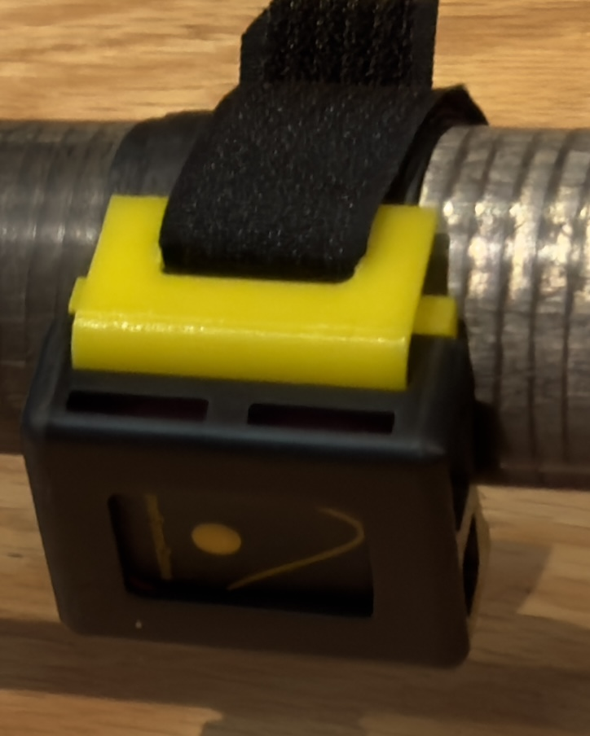

Oar Kit · Sensor Direction
Place both sensor buttons toward the blade.
Use the offset button to tell which way the sensor should face along the shaft. Then let the motion alignment establish the sensor reference for your oar.
Sensor Y-axis direction
The round button is offset within the housing opening. Fit the sensor so that this button sits closer to the blade end of the oar.
- Both sensors face the same way along the shaft. Sensor +Y points toward the handle; −Y points toward the blade. With the oar held upright, blade down, +Y points upward toward the handle. The offset button is on the −Y, blade-facing side.
- The button and sensor face remain visible through the housing.
- The saddle sits against the oar and the strap prevents the mount from rotating or sliding.
Repeat alignment if either sensor is removed, turns in its mount, or moves to a different position.

Finish with motion alignment
The mounting check gets the sensors facing the right way. The alignment recording uses deliberate oar movements to account for the remaining mounting angles and resting sensor offsets.
Use Oar Settings → Align Sensors in the iOS app, or make one short alignment recording with WitMotion on Android and upload it with your row.